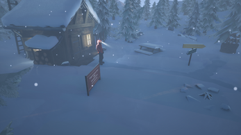
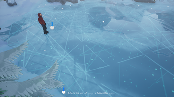

June, 2023
Project pitch
The game presented on this web page was created as part of my studies at ENJMIN in collaboration with a group of 4 other students. This game was initially pitched by myself :
Imagine yourself, lost, alone in the middle of nowhere, in a hostile environment where snow stretches as far as the eye can see. Your only way out is to cross this white expanse, an environment covered in thick snow of unknown depth. Following your instincts, you hope to make your way back home.
To see inital pitch slides. (in french for now)
During this project, I had the opportunity to work with Unreal Engine for the first time over a span of three to four months. As a part of the five-person game production team, I applied my skills using a combination of Blueprints and C++ to enhance the integration of assets and game content provided by my fellow team members. Being the only programmer in our team, I also had the chance to establish collaborative design processes using Perforce, which we set up on the ENJMIN servers in conjunction with another student from a different group. This experience allowed us to become more proficient with this tool and enhance our teamwork within the group.
Download game pageSnow interaction Developpment
At the project's outset, I embarked on the search for Unreal Engine technologies that could assist the group in creating a snow layer for the game's terrain. My goal was to strike a balance between efficient research and production to avoid excessive time investment in implementing this feature.
I came across an example of a technique employed to craft snowy terrains on Unreal Engine, created by an individual who had developed a dedicated plugin for this purpose :
Using this plugin as a source of inspiration, I developed a tool for interacting with snowy terrains. I also created a step-by-step documentation for the integration and modification of these terrains to make the process easier for the entire team.
Download my French doc to implemante snow on Landscape
Improvement Note :
To make the snow more realistic, it would have been relevant to add a particle system that reacts when the character controller moves through a layer of snow.
Cameras Behaviour
During development, I learned a lot about how to handle the camera in many ways. In our game "Through the snow", The camera is not attached to our character. Instead, it consists of multiple static points of view, dispatched in the levels. Moreover, all the cameras can smoothly transition between one another. I researched some techniques that allow us to achieve that smooth transition. With the help of our research, we managed to make a camera tool who serves the narration and highlight environment.
Improvement Note :
At present, if I were to revise the game's camera behavior, I would opt for a system that tracks the player's position in the level, allowing the camera to move automatically, much like what is observed in the game "Bramble, The Mountain King"




×